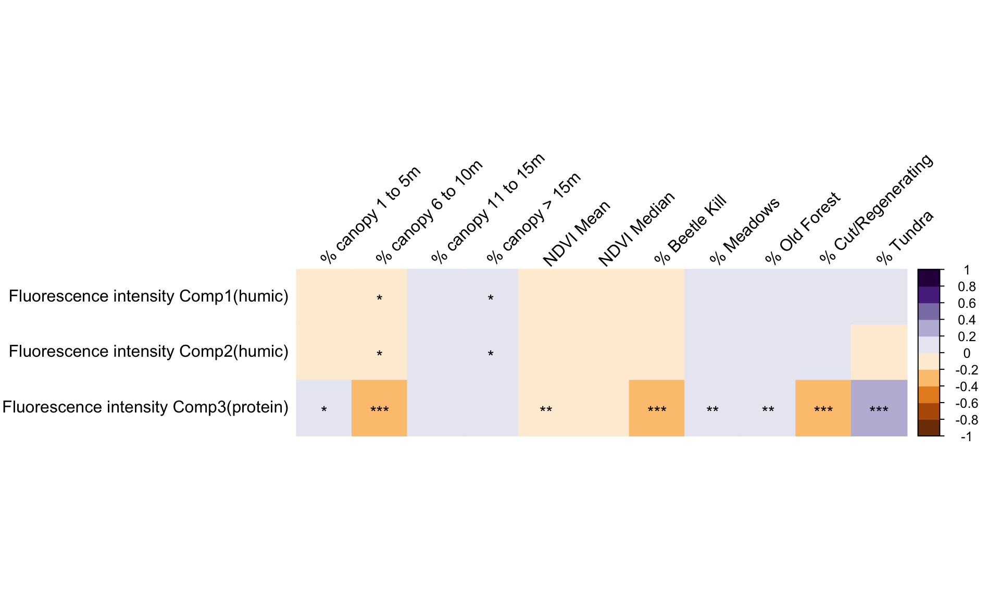
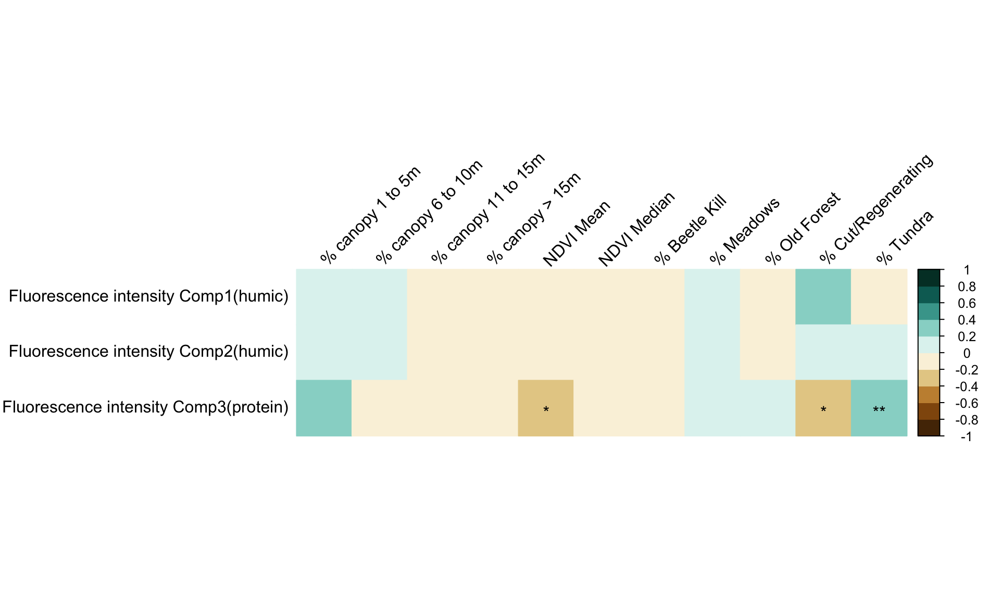
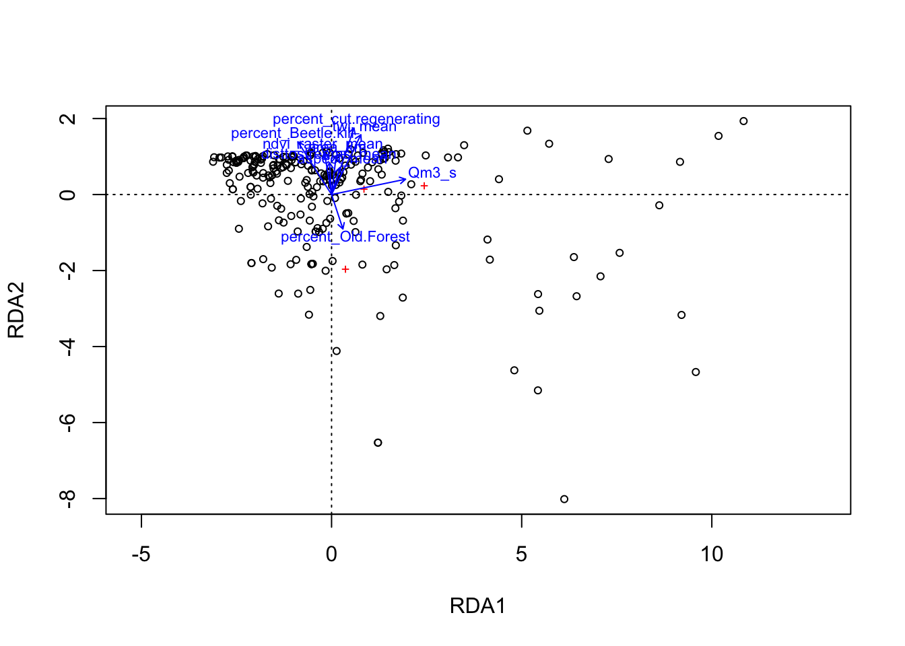
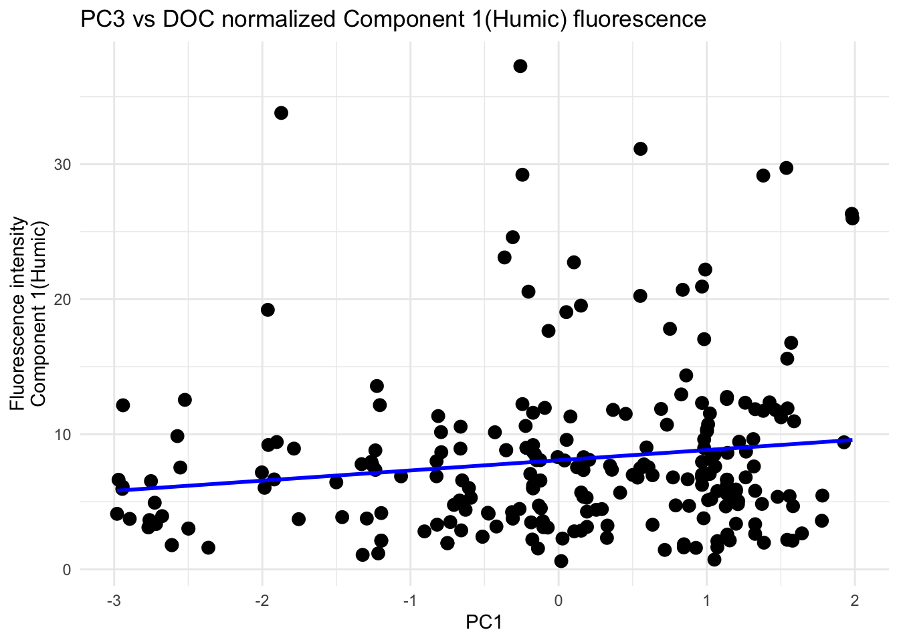
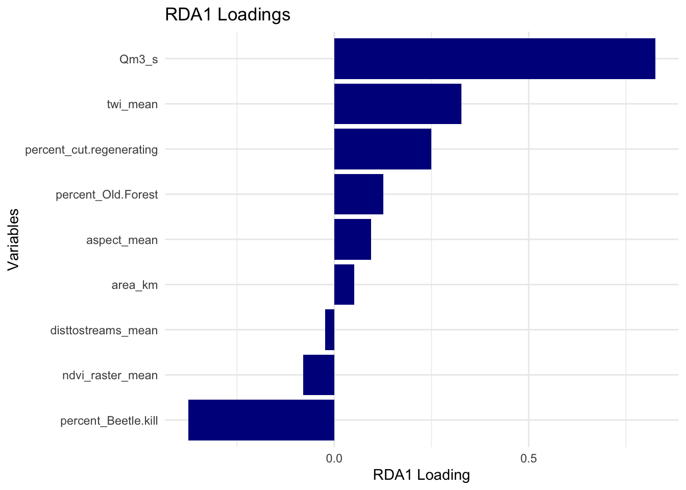
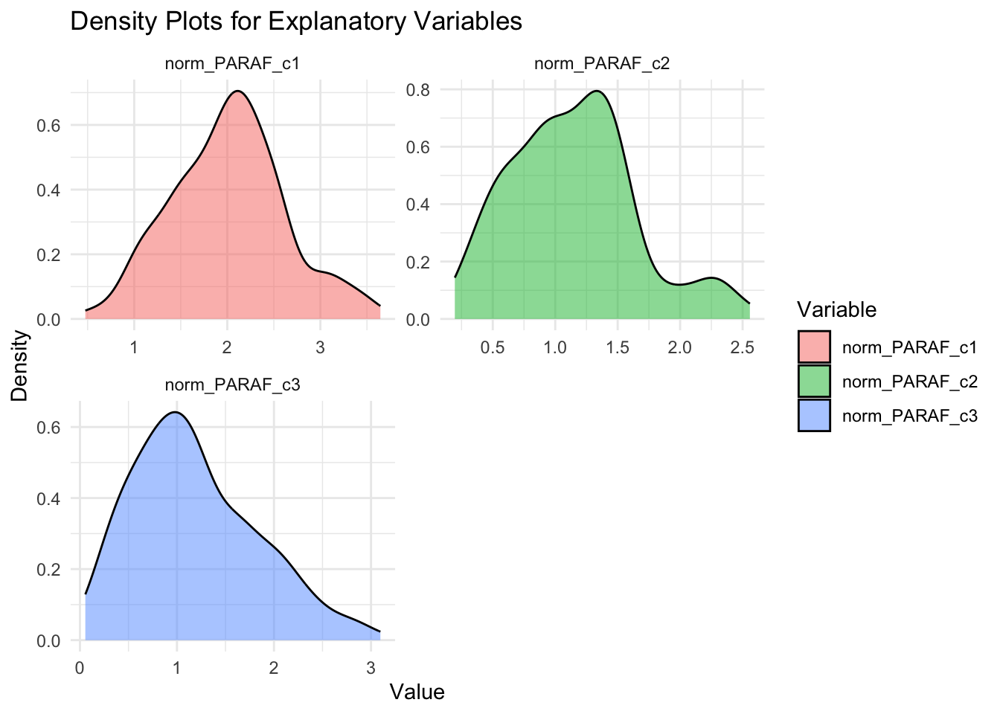

3.4 2. Normalized DOC
As well as observing fractions of fluorescing DOC, we can normalize our total ‘loading’ or fluorescence by the DOC concentration. This could help us better examine lability of DOC and how much fluorescence signal is produced per unit of carbon and differences in overall DOM reactivity (i.e., does a larger proportion of DOM fluoresce in some samples relative to others).
3.4.1 Box plots - DOC normalized loadings
Boxplots are visualizing DOC normalized loadings among watersheds

Figure 3.26: Figure. Box plots showing the relationships the normalized fluorescence intensity and watershed. dh,dhn and dhs = Deadhorse, fc = Fool Creek. Horizontal bars indicate sample median, asterisks indicate sample mean. Whiskers (vertical lines) extend to the most extreme data point which is no more than range times the interquartile range from the box
We can also explore normalized intensity, or the total fluorescence per unit of DOC of each PARAFAC component.
Why do we care? Without normalization fluorescence intensity can be heaviliy influenced by DOC concentration.
3.4.1.1 Humic1 - or PARAFAC component 1

Figure 3.27: Figure. Box plots showing the relationships between the PARAFAC component 1 fluorescence intensity (humic-type) and watershed. dh,dhn and dhs = Deadhorse, fc = Fool Creek
3.4.2 Correlation matrices - Normalized loadings
If matrices are in a purple gradient, then the plot includes all dates. If green, then the plot represents a subset of dates
By looking at these, we are answering: “How does the actual concentration of a specific DOC component (humic, protein-like, etc.) change in relation to these watershed variables?” #### ALL EEMS ##### Landcover

Figure 3.30: Figure. Combined plot showing the relationships between fluorescence intensity of 3 PARAFAC components and landcover characteristics for all samples with EEMs data (July 2021- Oct 1, 2022). Color indicates direction and correlation value (Pearson’s). Asterisks indicate level of significance.
This figure indicates that:
- The fluorescence intensity of humic DOM slightly decreases with high percentages of 6-10m canopy
- The fluorescence intensity of humic DOM slightly increases with increasing watershed coverage of very tall canopy >15m.
- Protein-like fluorescence intensity decreases with high percentages of cut or regenerating forest, and canopy between 6 and 10m,
- but increase with increased coverage by Tundra.
- Significant but weaker correlations indicate that protein-like fractions increase with increasing meadow and old forest coverage.
Overall, these trends are similar to those seen when looking at fractions (rather than normalized intensities) but with lower correlations and less significance (greater variation)
3.4.2.0.1 Topo and moisture - all EEMS

Figure 3.31: Figure. Combined plot showing the relationships between fluorescence intensity of 3 PARAFAC components and topographic or moisture characteristics for all samples with EEMs data (July 2021- Oct 1, 2022). Color indicates direction and correlation value (Pearson’s). Asterisks indicate level of significance.
This figure indicates that:
- the intensity of humic fluorescing DOM increases with increasing discharge.
Humic fractions (DOC composition) show more relationships.
Protein-like fluorescence intensity increases with increasing slope and distance from outlet.
- Protein-like fluorescence intensity decreases with increasing NDMI and TWI (moisture) and and increased mean distance to the stream channel.
3.4.2.0.2 Ions - all EEMS
Figure 3.32: Figure. Combined plot showing the relationships between fluorescence intensity of 3 PARAFAC components and DOC (mg/L), and ions (mg/L) for all samples with EEMs data (July 2021- Oct 1, 2022). Color indicates direction and correlation value (Pearson’s). Asterisks indicate level of significance.
This figure indicates that:
- intensity of humic fluorescing DOM decreases with Potassium.
- intensity of protein-like fluorescing DOM increase with increasing Ca+ and nitrate (NO3
- and the intensity of protein-like fluorescing DOM decreases withsodium, potassium (K) and fluoride (F) concentration)(same or similar resutls to fractions).
3.4.2.1 Summer subset 2022 (mid-June to mid July)
3.4.2.1.1 Landcover - summer 2022
![Figure. Combined plot showing the relationships between fluorescence intensities of 3 PARAFAC components and landcover characteristics for EEMs samples collected between June 10 to July 15, 2022, which includes a synoptic sampling. Color indicates direction and correlation value (Pearson's). Asterisks indicate level of significance. This figure indicates that humic fraction of the fluorescing DOM increase with high percentages of tundra, and short canopy. Protein-like fractions of the fluorescing DOM increase with high percentages of cut or regenerating forest, and canopy between 6 and 10m.](PLSbookdownproj_files/figure-html/unnamed-chunk-123-1.png)
Figure 3.33: Figure. Combined plot showing the relationships between fluorescence intensities of 3 PARAFAC components and landcover characteristics for EEMs samples collected between June 10 to July 15, 2022, which includes a synoptic sampling. Color indicates direction and correlation value (Pearson’s). Asterisks indicate level of significance. This figure indicates that humic fraction of the fluorescing DOM increase with high percentages of tundra, and short canopy. Protein-like fractions of the fluorescing DOM increase with high percentages of cut or regenerating forest, and canopy between 6 and 10m.
![Figure. Combined plot showing the relationships between relative loadings of 3 PARAFAC components and topographic or moisture characteristics for EEMs samples collected between June 10 to July 15, 2022, which includes a synoptic sampling. Color indicates direction and correlation value (Pearson's). Asterisks indicate level of significance. This figure indicates that **humic** fraction of the fluorescing DOM **increase** with increasing discharge, the distance that allochthonous water travels before reaching the stream channel, and increased watershed moisture. **Humic** fractions **decrease** with watershed slope. **Protein-like** fractions of the fluorescing DOM **increase** with increasing slope and **decrease** with increasing Q, increasing moisture indices, and increased mean distance to the stream channel.](PLSbookdownproj_files/figure-html/unnamed-chunk-124-1.png)
Figure 3.34: Figure. Combined plot showing the relationships between relative loadings of 3 PARAFAC components and topographic or moisture characteristics for EEMs samples collected between June 10 to July 15, 2022, which includes a synoptic sampling. Color indicates direction and correlation value (Pearson’s). Asterisks indicate level of significance. This figure indicates that humic fraction of the fluorescing DOM increase with increasing discharge, the distance that allochthonous water travels before reaching the stream channel, and increased watershed moisture. Humic fractions decrease with watershed slope. Protein-like fractions of the fluorescing DOM increase with increasing slope and decrease with increasing Q, increasing moisture indices, and increased mean distance to the stream channel.
3.4.2.1.2 Ions - summer 2022 (mid-June to mid July)
Figure 3.35: Figure. Combined plot showing the relationships between relative loadings of 3 PARAFAC components and DOC (mg/L), and ions (mg/L) EEMs samples collected between June 10 to July 15, 2022, which includes a synoptic sampling. Color indicates direction and correlation value (Pearson’s). Asterisks indicate level of significance.
3.4.3 Hydrograph - Fluorescence intensities in Fool creek with 2022 hydrograph
Figure 3.36: Figure. Fluorescence intensities over time from Fool Creek outlet stream site only. Component 1 (humic) appears to increase with discharge while the fraction of Component 2 (humic) and Component 3 (protein-like) decrease during peak flow
3.4.4 PCA

Figure 3.37: Figure.
…BUT again, PCA is unsupervised and doesn’t directly consider the response variable. So how well does PC1 explain the variability of the first PARAFAC component (humic)?.
Let’s look at PC1 in 2-D space by plotting it against our response variable to see how PC1 correlates with the sample fraction of Humic Component1. We can get a sense of the strength and direction of the relationship:  Meh.
Explore correlations between the first 3 PCs and the response variable:
## [,1]
## Dim.1 0.045068753
## Dim.2 -0.006837438
## Dim.3 0.150856896Lets fit a linear model with the first few components as predictors:
##
## Call:
## lm(formula = norm_PARAF_c1 ~ Dim.1 + Dim.2 + Dim.3, data = pca_scores)
##
## Residuals:
## Min 1Q Median 3Q Max
## -8.413 -3.895 -1.514 1.741 29.896
##
## Coefficients:
## Estimate Std. Error t value Pr(>|t|)
## (Intercept) 8.07785 0.40042 20.174 <2e-16 ***
## Dim.1 0.13456 0.19233 0.700 0.485
## Dim.2 -0.03092 0.29131 -0.106 0.916
## Dim.3 0.75571 0.32270 2.342 0.020 *
## ---
## Signif. codes: 0 '***' 0.001 '**' 0.01 '*' 0.05 '.' 0.1 ' ' 1
##
## Residual standard error: 6.19 on 235 degrees of freedom
## Multiple R-squared: 0.02484, Adjusted R-squared: 0.01239
## F-statistic: 1.995 on 3 and 235 DF, p-value: 0.1154There is a significant and decent correlation with PC3: 

3.4.5 RDA (Redundancy Analysis)
-If explanatory variables must be centered, standardized, transformed or normalized
We know from looking at distribuiton sin part 1 that our data is made up of quantitative variables with different units and numerical ranges. Standardization transforms the variables so they have a mean of zero and a standard deviation of one. Also, our response variables are right-skewed unimodal. We need to make the data more symmetrical or approximately normal, as RDA assumes linear relationships between variables. In the case of a right-skew, we can log transform to compress the long right tails and spread out lower values.

Ok, now our responses are approximately normal. The scales are similar, the units are the same. I am not sure if we want to standardize/z-score these as well. This can ensure that they contribute equally to the analysis…lets try both and see if scaling makes a difference:
scaled: 
## Call: rda(formula = standardized_resp ~ aspect_mean + twi_mean +
## ndvi_raster_mean + disttostreams_mean + percent_Beetle.kill +
## percent_Old.Forest + percent_cut.regenerating + area_km + Qm3_s, data =
## explanatory_standardized, na.action = na.exclude)
##
## -- Model Summary --
##
## Inertia Proportion Rank
## Total 3.0000 1.0000
## Constrained 0.3314 0.1105 3
## Unconstrained 2.6686 0.8895 3
##
## Inertia is variance
##
## -- Eigenvalues --
##
## Eigenvalues for constrained axes:
## RDA1 RDA2 RDA3
## 0.21235 0.11724 0.00181
##
## Eigenvalues for unconstrained axes:
## PC1 PC2 PC3
## 2.3090 0.3302 0.0294Constrained variance (0.009048, 48.1%): This is the portion of the total variance in the response matrix explained by the explanatory variables (e.g., area, slope, NDVI, etc.). i.e., variables explain around 48% of the variation the PARAFAC component fractions.
Unconstrained variance (0.009779, 51.9%): This is not explained by the predictors, so more than half of the variation is not explained by the model.
This returns the note Some constraints or conditions were aliased because they were redundant. This can happen if terms are linearly dependent (collinear): ‘percent_Tundra’.
-Similar to PCA, but it is a constrained method that requries two datasets, one for response variables (e.g., PARAFAC component fractions) and one for explanatory variables (watershed characteristics)
RDA identifies the portion of the variation in the response dataset that can be explained by the explanatory variables. So this tells us how much of the variability in the response variables is explained by the predictors.

## Call: rda(formula = response_matrix ~ aspect_mean + twi_mean +
## ndvi_raster_mean + disttostreams_mean + percent_Beetle.kill +
## percent_Old.Forest + percent_cut.regenerating + area_km + Qm3_s, data =
## explanatory_matrix, na.action = na.exclude)
##
## -- Model Summary --
##
## Inertia Proportion Rank
## Total 54.31468 1.00000
## Constrained 5.14670 0.09476 3
## Unconstrained 49.16798 0.90524 3
##
## Inertia is variance
##
## -- Eigenvalues --
##
## Eigenvalues for constrained axes:
## RDA1 RDA2 RDA3
## 3.271 1.868 0.008
##
## Eigenvalues for unconstrained axes:
## PC1 PC2 PC3
## 43.30 5.59 0.28##
## Call:
## rda(formula = response_matrix ~ aspect_mean + twi_mean + ndvi_raster_mean + disttostreams_mean + percent_Beetle.kill + percent_Old.Forest + percent_cut.regenerating + area_km + Qm3_s, data = explanatory_matrix, na.action = na.exclude)
##
## Partitioning of variance:
## Inertia Proportion
## Total 54.315 1.00000
## Constrained 5.147 0.09476
## Unconstrained 49.168 0.90524
##
## Eigenvalues, and their contribution to the variance
##
## Importance of components:
## RDA1 RDA2 RDA3 PC1 PC2 PC3
## Eigenvalue 3.27102 1.86771 0.0079711 43.3025 5.5903 0.275216
## Proportion Explained 0.06022 0.03439 0.0001468 0.7973 0.1029 0.005067
## Cumulative Proportion 0.06022 0.09461 0.0947571 0.8920 0.9949 1.000000
##
## Accumulated constrained eigenvalues
## Importance of components:
## RDA1 RDA2 RDA3
## Eigenvalue 3.2710 1.8677 0.007971
## Proportion Explained 0.6356 0.3629 0.001549
## Cumulative Proportion 0.6356 0.9985 1.000000Take home: PCA and RDA do not work well with multicollinearity, yet many of our variables covary, not because they are redundant, rather they are likely driving each other in a path (i.e. topography influences landcover which influences hydrology which influences DOM)

